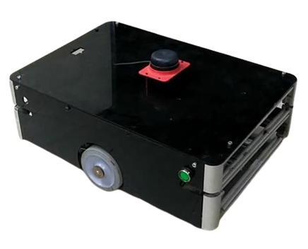
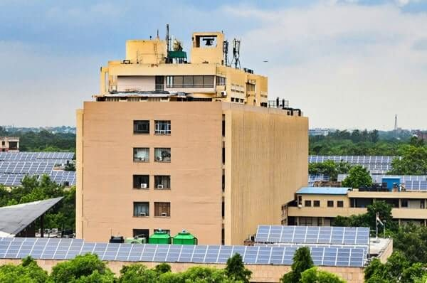
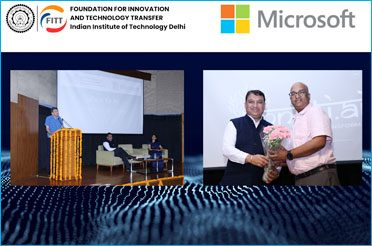
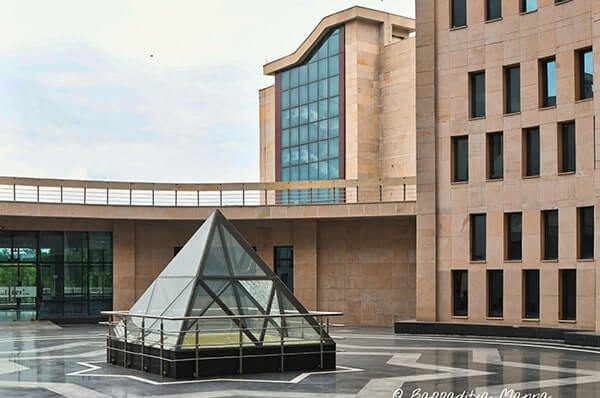
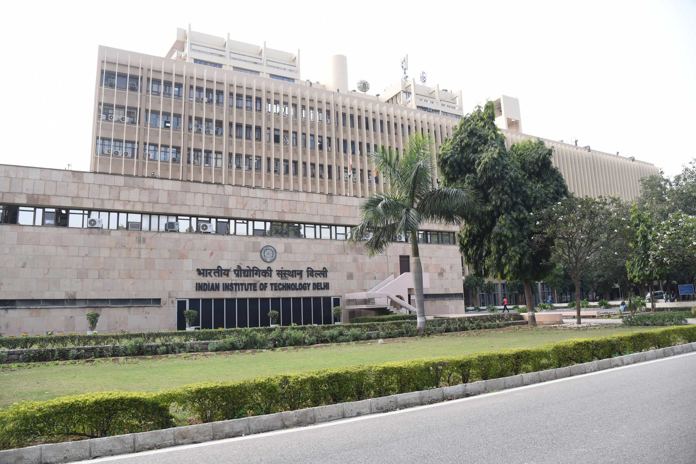
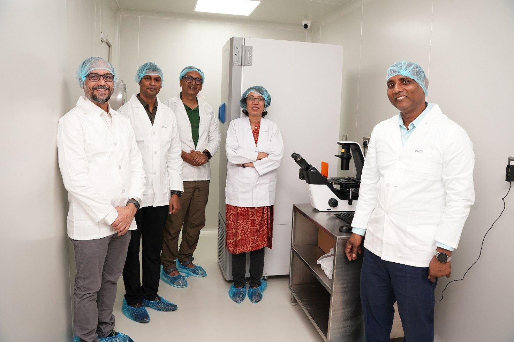
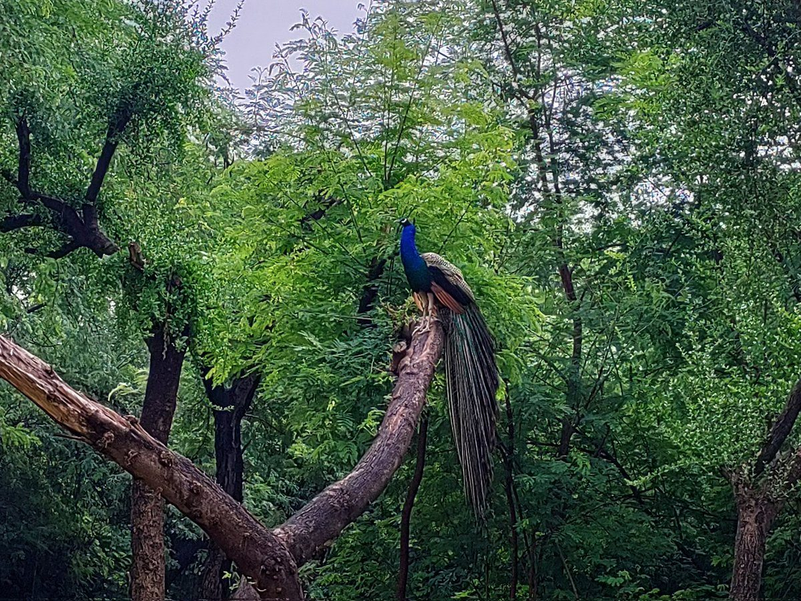
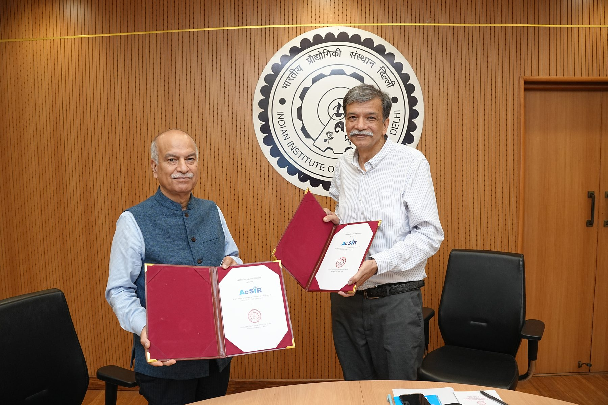

MAIN BUILDING
A campus shaped by learning, research and public purpose.
Explore the institute, its people and its work.
Explore the institute, its people and its work.
Explore campus life

See campus life

Explore student culture

Explore innovation

IIT Delhi convocation
Figures are dated snapshots from official publications, not a live counter. Student figure source · Faculty and staff source
Start with a programme, academic unit, research area or innovation community.

Find undergraduate, postgraduate and doctoral programme information.

Explore research areas, centres and facilities.

Discover technology transfer, entrepreneurship and startup support.

Browse the institute’s academic structure and units.
A closer look at engineering prototypes and scientific work from IIT Delhi.
An IIT Delhi research team is advancing compact graphics-processing approaches for scientific computing.
Explore research →
Researchers investigate approaches that support speech and language therapy.
Explore science →
Specialized laboratories support work across health, materials and technology.
See research highlights →Robomuse photo: IIT Delhi news. RC Lab photo: Wikimedia Commons.
Choose a section to see relevant campus, student, academic and research images.

Music, performances and student gatherings.

A group performs at an IIT Delhi cultural programme.

See gardens, buildings, hostels and dining life.

Project demonstrations, experiments and academic showcases.
A short locally stored visual tour moves through campus architecture, green spaces, a hostel, the library, student culture and research.
This is an original motion montage made from the bundled IIT Delhi photographs, not downloaded live-action footage. It plays from this site folder without an internet connection.
Buildings, hostel life and student creativity in six different views. Select an arrow in the main photo carousel to explore each scene.



LATEST ANNOUNCEMENT · 30 SEP 2026The MoU supports joint research, postgraduate co-supervision and student and faculty exchange.
Read the announcement →Research highlights & patents →Talks, workshops, symposia and community events.
Explore the seminar guideReach the institute directory and common service portals.